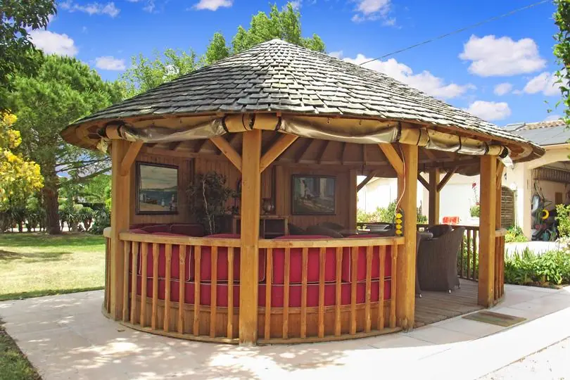

Un anniversaire rond se fête avec tout le monde : enfants, petits-enfants, frères et sœurs, amis de toujours. Le problème est rarement l'envie, c'est le lieu : assez grand pour 30 ou 40 convives, assez calme pour les aînés, avec des chambres pour que personne ne reprenne la route le soir. À Lherm, à 20 minutes de Toulouse, le Domaine des Six se privatise pour une journée ou un week-end de famille.
Une journée qui tient toute la famille
Déjeuner ou dîner sous la tente permanente du parc (jusqu'à 40 convives assis), apéritif à la paillote, café au kiosque, jeux des enfants sur la pelouse, baignade en option dans la piscine chauffée de mai à septembre. Le traiteur de votre choix livre et sert ; le domaine ne fournit pas les repas, mais les cuisines des logements sont à disposition pour le gâteau et les boissons.
Tout le monde dort sur place
Cinq logements indépendants, 15 couchages : les grands-parents dans Amazone, de plain-pied, les familles dans Libération, les couples dans les studios Ora et Sens, et la love room Désir pour les jeunes mariés de la famille, à partir de juin 2027. Linge et ménage compris. Petit-déjeuner en commun le lendemain, dans le parc.
Combien ça coûte ?
- Journée en semaine (10 h – 22 h) : 490 € les espaces ; 290 € la demi-journée.
- Journée le week-end ou veille de férié : 690 € les espaces.
- Week-end domaine privatisé, 2 nuits, espaces + 5 logements : 1 990 € d'octobre à mai, 2 490 € de juin à septembre et lors des fêtes et ponts. Le week-end, au-delà de 15 convives, c'est la formule qui s'applique.
- Piscine en option : 5 € par personne la demi-journée, 10 € la journée. Paillote en option : 80 € la grande, 50 € la petite. Repas réglés directement au traiteur.
Pourquoi ici plutôt qu'un restaurant ou une salle des fêtes
Personne ne reprend la voiture, le lieu est à vous seuls, la soirée se prolonge dans le respect du voisinage, et les photos se font dans un vrai parc planté d'oliviers et de cyprès, face aux Pyrénées. Vos hôtes résident sur place et s'occupent de la régie : accueil à votre arrivée, ou boîte à clés si vous arrivez tard.
Questions fréquentes
Peut-on venir à 40 personnes ?
Les animaux sont-ils acceptés ?
Faut-il réserver longtemps à l'avance ?
À lire aussi
Ouverture mi-janvier 2027
Votre projet au domaine
Dites-nous votre date, le nombre de personnes et votre format : nous construisons la journée avec vous, sur devis.
Demander un devisTéléphone 06 98 20 02 08 · francois.leterrier.cmw@gmail.com